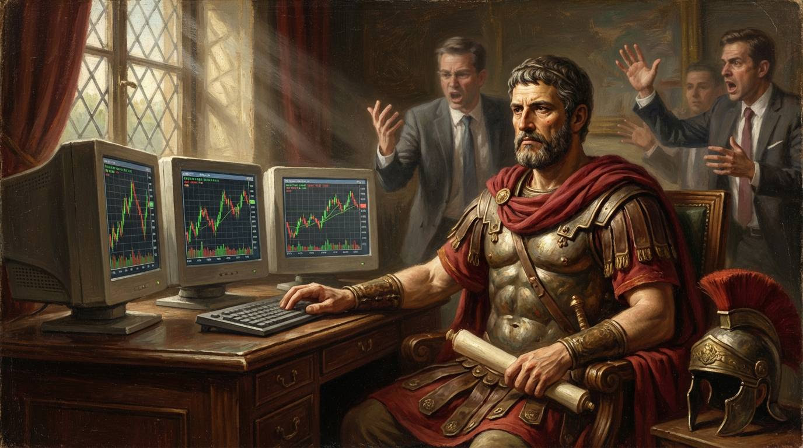

Double-hard ex-Navy SEAL Jocko Willink has a line.
"Discipline equals freedom."
Sounds a bit backwards, doesn't it?
You see, most people think discipline is the cage. Rules and restrictions all stopping you from doing what you want.
But ask any trader who's been at this a while, and they'll tell you this…
DISCIPLINE EQUALS FREEDOM

The traders with the strictest rules are the ones trading the calmest, relaxed, unbothered, and free.
The traders with no rules? Well, those guys are often the most stressed, anxious about what to do, hesitant, and white-knuckling every tick…
Think about today's FOMC as an example. We're not expecting any big changes, but plenty of people will trade right on the headline only to get chopped up in the first five minutes.
Then spend the rest of the evening chasing it back…and regretting getting sucked in.
Your discipline today is your freedom tomorrow.
The rule that says "I don't trade the first 15 minutes" isn't holding you back. It's the thing that lets you sit there watching, relaxed, brain not shouting 'I must find a trade', while everyone else scrambles…
Work out what your game is, and stick to it.
The rules then become almost automatic…
Did the late Jim Simons from Renaissance need rules to stop him from overriding the algos? Probably at first, but then it didn't even enter his mind to manually trade.
Does Buffett need a rule not to day trade? I doubt it; he has his edge and waits for it to appear.
The rules build the trader. The trader stops needing the rules.
PS: Jocko also has a book called Extreme Ownership. Worth a read.